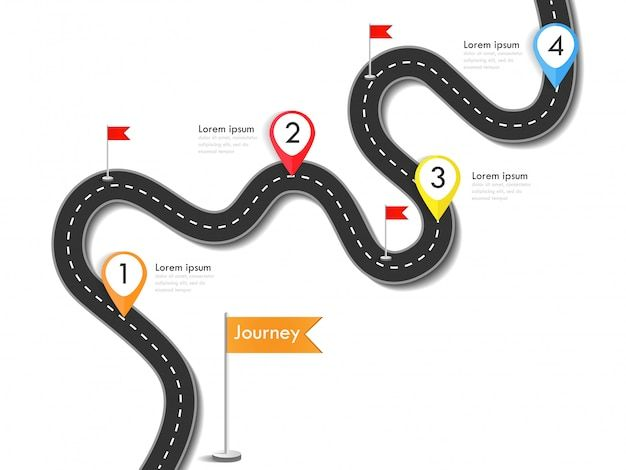
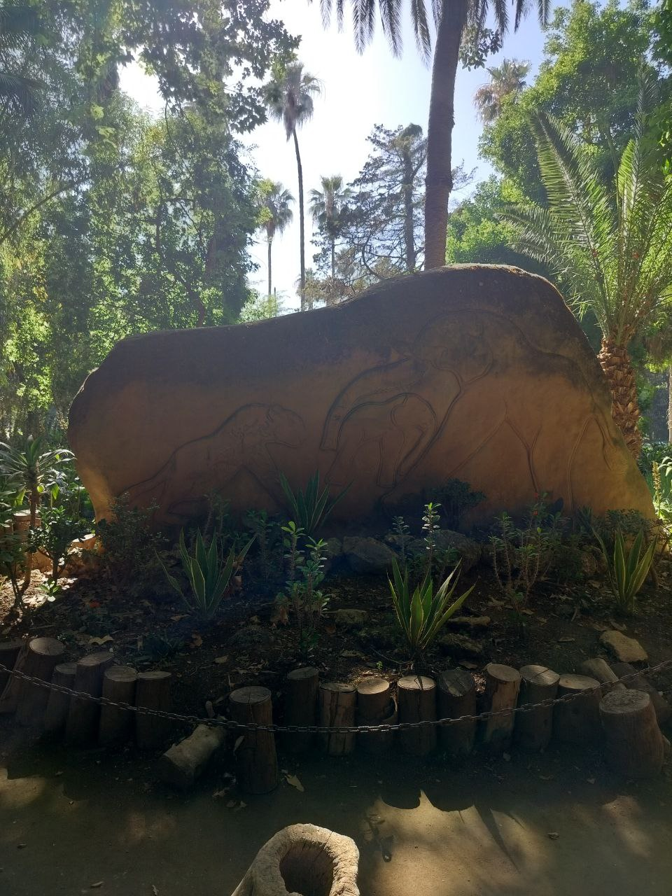
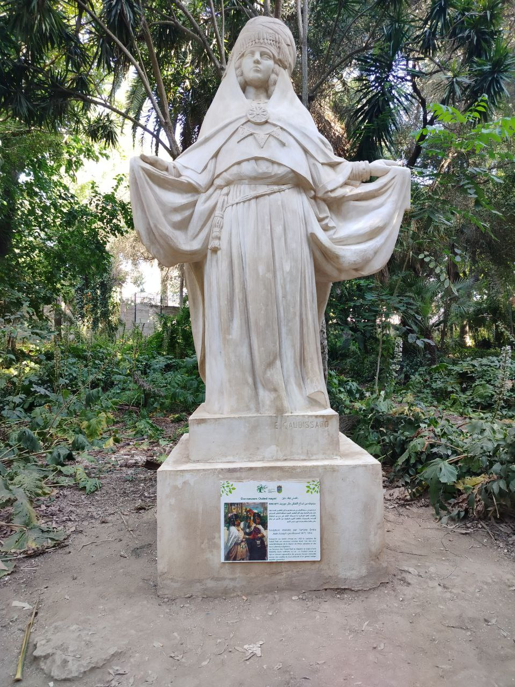

Statistics
- Date: 25 June 2025
- Tour time: 20 min
- Tour distance: 20km

French Garden
from the Tassili n'Ajjer plateau in southeastern Algeria. This UNESCO World Heritage site boasts over 15,000 prehistoric drawings and engravings, depicting climatic changes, animal migrations, and human life from 6000 BC.

English Garden
a religious figure or historical personage, placed within a lush green environment. There's a plaque at its base, likely providing information about the statue itself or the person it represents